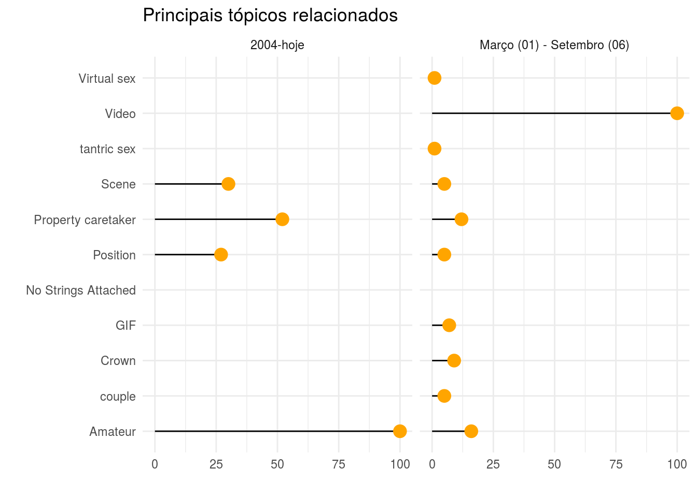
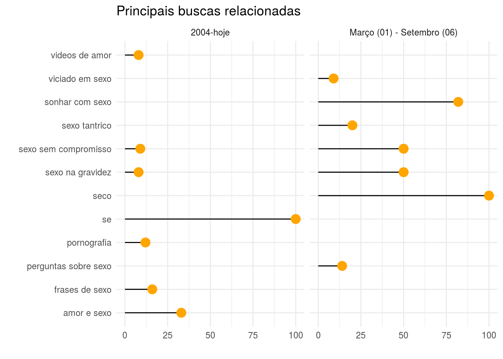
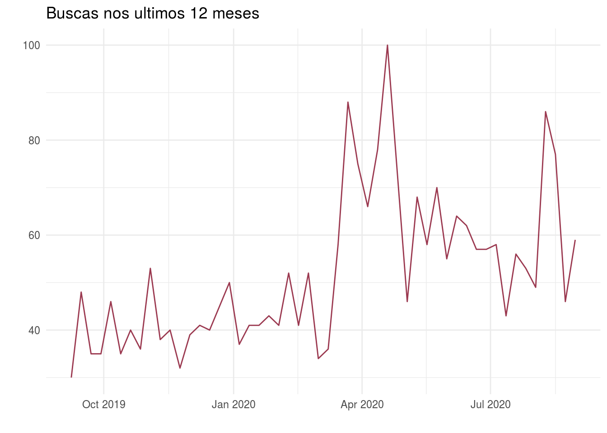
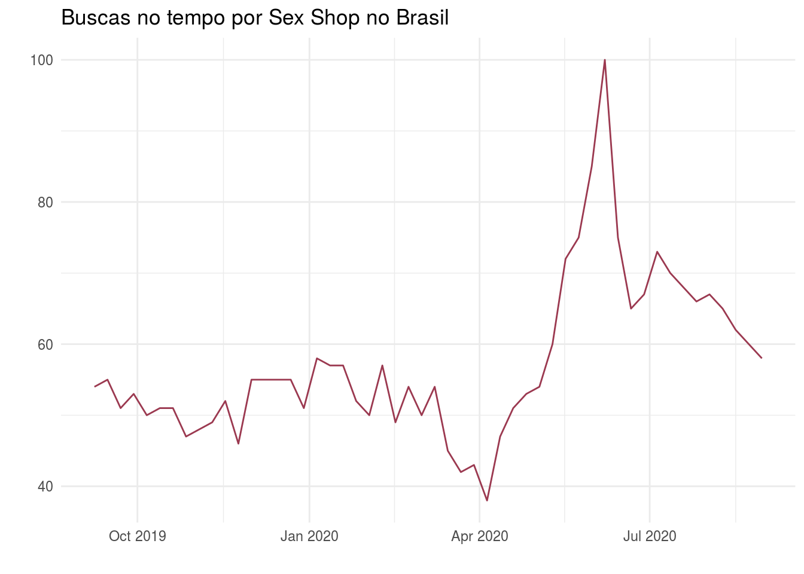

Google Trends no R - Qual o comportamento do brasileiro em relação a sexo durante a pandemia?
Você já procurou no google coisas que nunca contou a ninguém? Que tem medo ou vergonha de compartilhar?
O Google é hoje a maior base de dados sobre o comportamento humano, conseguindo refletir nossos desejos, medos, gostos, angustias, dúvidas e mais, só é necessário fazer as perguntas certas. Isto é o defende Seth Stephens-Davidowitz no livro “Todo Mundo Mente”, explicando que:
“O poder do Google está no fato de as pessoas “contarem” ao gigantesco mecanismo de busca o que não diriam a mais ninguém. […] As buscas do google são o conjunto de dados mais importante jamais coletado sobre a pisque humana.
Por que isso acontece?
Devido ao anonimato das buscas, o google parece um grande confidente ou confessionário, assim, as pessoas não sentem a pressão ou julgamento em relação a um assunto, algo que poderiam ter em uma pesquisa ou em uma conversa com um amigo, parente, levando-as a mentir, até para sí próprias.
Dessa forma, inspirada no livro e porque recentemente foi Dia do Sexo (06/09), fiquei me perguntando: o que o brasileiro busca no google em relação a sexo? quais têm sido as tendências desde o início da pandemia? Resolvi escolher esse tema justamente pelo tabu social envolvido e ser algo extremamente intímo, potencialmente revelando algo interessante sobre o comportamento do brasileiro no assunto que pouco sabemos, justamente pelo tabu do assunto.
Para isso, vou utilizar o pacote gtrends, que permite capturar informações do Google Trends pelo R e fazer análises! Para mais informações do pacote, acessar o CRAN:
gtrends. Se você quiser explorar mais o pacote, tem um site que eu acompanho que fez uma intro super fácil, recomendo acessar o
post.
Primeiro é necessário baixar o pacote e as librays que vão ser utilizadas.
# Instalar o pacote gtrendsR
# devtools::install_github('PMassicotte/gtrendsR')
#Carregar os pacotes
library(gtrendsR)
library(tidyverse)
Buscar a informação
Primeiro específicamos as palavras ou palavaras, depois o localização que queremos, no caso Brasil e o tempo de busca. Resolvi procurar de forma suuuper genérica mesmo, só o termo, não necessáriamente é a “pergunta correta”
resultados_all <- gtrends(c("sexo"), geo = "BR", time = "all")
resultados_tres <- gtrends(c("sexo"), geo = "BR", time = "2020-03-01 2020-09-06")
## Warning in system("timedatectl", intern = TRUE): running command 'timedatectl'
## had status 1
A partir dessa busca com um termo amplo, vou analisar quais os tópicos e buscas relacionadas, comparando os últimos 3 meses com o período atual, houve aumento de alguma busca? Quais os termos?
Vale ressaltar que tanto em tópicos quanto em buscas para realizar o gráfico estou excluindo os assuntos em ascensão e deixando somente o que está como principais buscas relaciondas, no entanto ainda dando destaque os que estão em ascensão por meio de uma tabela, por possuírem uma escala diferente que não vai de 0 a 100.
Topicos relacionados
topic_all <- resultados_all$related_topics
topic_all <- topic_all %>% mutate(tipo = "2004-hoje")
topic_tres <- resultados_tres$related_topics
topic_tres <- topic_tres %>% mutate(tipo = "Março (01) - Setembro (06)")
topic <- rbind(topic_all, topic_tres)
topic %>%
filter(related_topics != "rising") %>%
mutate(peso = as.numeric(subject)) %>%
ggplot(aes(x=value, y=peso)) +
geom_segment( aes(xend=value, yend=0)) +
geom_point( size=4, color="orange") +
facet_grid(cols = vars(tipo)) +
coord_flip()+
theme_minimal() +
labs(x= "", y= "", title = "Principais tópicos relacionados")
 Os tópicos relacionados não tiveram grande mudança, no entanto, em vista de tempos de isolamento social GIF apareceu como um tópico novo, será é uma nova forma das pessoas continuarem suas relações e se comunicando? Vou explorar esse assunto. Casal (couple) também é um termo que está como um dos principais nas buscas nesse período de quarentena. Outra interessante que pode estar relacionada é “Sexo virtual” e casal, pessoas buscando novas formas de se relacionar?
Já os assuntos em ascensão:
topic %>% filter(related_topics == "rising") %>% knitr::kable()
| subject | related_topics | value | geo | keyword | category | tipo |
|---|---|---|---|---|---|---|
| +170% | rising | Property caretaker | BR | sexo | 0 | 2004-hoje |
| +130% | rising | Amateur | BR | sexo | 0 | 2004-hoje |
| +90% | rising | Position | BR | sexo | 0 | 2004-hoje |
| +60% | rising | Scene | BR | sexo | 0 | 2004-hoje |
| +50% | rising | Virtual sex | BR | sexo | 0 | Março (01) - Setembro (06) |
| +40% | rising | No Strings Attached | BR | sexo | 0 | Março (01) - Setembro (06) |
Nos termos em ascensão, nota-se os vídeos (no período desde de 2004), já no período mais recente está “sexo virtual” e “sem compromisso”.
Olhando o gráfico, o que é presente e de certa forma mostra o lado “escondido” do comportamento (ainda que há várias pesquisas sobre isso em relação a pornografia) são os termos padrasto, não vou explorar profundamente o assunto pois já existem pesquisas, mas em uma busca pelos tópicos similares os termos incesto, erotismo, estupro e outros estão fortemente relacionados ao tópico, o que demonstra o problema em nosso país relacionado a pedofilia, uma reportagem da Gazeta do Povo tratou do assunto que infelizmente aumentou virtualmente na quarentena.
Buscas relacionadas
search_all <- resultados_all$related_queries
search_all <- search_all %>% mutate(tipo = "2004-hoje")
search_tres <- resultados_tres$related_queries
search_tres <- search_tres %>% mutate(tipo = "Março (01) - Setembro (06)")
search <- rbind(search_all, search_tres)
search %>%
filter(related_queries != "rising") %>%
mutate(peso = as.numeric(subject)) %>%
ggplot(aes(x=value, y=peso)) +
geom_segment( aes(xend=value, yend=0)) +
geom_point( size=4, color="orange") +
facet_grid(cols = vars(tipo)) +
coord_flip()+
theme_minimal() +
labs(x= "", y= "", title = "Principais buscas relacionadas")
 As buscas relacionadas ao termo trazem questões interessantes, os termos foram: “viciado em sexo”, “perguntas sobre sexo”, “sexo tantrico”, não tenho respostas sobre o porque as pessoas fizeram essas buscas, o que as motivou. O que você acha que pode ter sido? Quais as suas hipóteses? Comenta aí!
Já os assuntos em ascensão:
search %>% filter(related_queries == "rising") %>% knitr::kable()
| subject | related_queries | value | geo | keyword | category | tipo |
|---|---|---|---|---|---|---|
| +350% | rising | videos de amor | BR | sexo | 0 | 2004-hoje |
| +350% | rising | se | BR | sexo | 0 | 2004-hoje |
| +300% | rising | sexo sem compromisso | BR | sexo | 0 | 2004-hoje |
| +150% | rising | frases de sexo | BR | sexo | 0 | 2004-hoje |
| +50% | rising | sonhar com sexo | BR | sexo | 0 | Março (01) - Setembro (06) |
| +40% | rising | sexo sem compromisso | BR | sexo | 0 | Março (01) - Setembro (06) |
Algo interessante de notar é o aumento durante o período da pandemia que houve um aumento nas buscas sobre “sonhar com sexo”, será que os desejos das pessoas e o isolamento está levando que isso ocorra com maior frequencia?
Explorando mais o contexto de isolamento social, é possível perceber um grande aumento de buscas relacionadas a “sexo virtual”, justamente no período de maior isolamento no país
result2_all <- gtrends(c("sexo virtual"), geo = "BR", time = "today 12-m", cookie_url = "http://trends.google.com/Cookies/NID", onlyInterest = TRUE)
result2_all$interest_over_time %>%
ggplot(aes(x=date, y=hits)) +
geom_line() +
theme_minimal() +
labs(x= "", y= "", title = "Buscas nos ultimos 12 meses")

GIFS, quais as buscas relacionadas?
Olhando somente os termos em ascensão de busca, nota-se que há uma grande relação do uso de GIFS sexuais, possivelmente uma forma que passou a ser mais amplamente utilizada durante o período de isolamento para se comunicar em relação a sexo.
gif <- gtrends("GIF", geo = "BR", time = "all", cookie_url = "http://trends.google.com/Cookies/NID")
gif$related_queries %>% filter(related_queries == "rising") %>% knitr::kable()
| subject | related_queries | value | geo | keyword | category |
|---|---|---|---|---|---|
| Breakout | rising | tumblr gif | BR | GIF | 0 |
| Breakout | rising | gif bom dia | BR | GIF | 0 |
| Breakout | rising | gif boa noite | BR | GIF | 0 |
| Breakout | rising | gif whatsapp | BR | GIF | 0 |
| Breakout | rising | gif facebook | BR | GIF | 0 |
| Breakout | rising | gif de bom dia | BR | GIF | 0 |
| Breakout | rising | gif de boa noite | BR | GIF | 0 |
| Breakout | rising | gif instagram | BR | GIF | 0 |
| Breakout | rising | gif youtube | BR | GIF | 0 |
| Breakout | rising | gif beijo | BR | GIF | 0 |
| Breakout | rising | gif para whatsapp | BR | GIF | 0 |
| Breakout | rising | gif sexy | BR | GIF | 0 |
| Breakout | rising | oral gif | BR | GIF | 0 |
| Breakout | rising | gretchen gif | BR | GIF | 0 |
| Breakout | rising | gif no facebook | BR | GIF | 0 |
| Breakout | rising | como criar gif | BR | GIF | 0 |
| Breakout | rising | gif no whatsapp | BR | GIF | 0 |
| Breakout | rising | gif boa tarde | BR | GIF | 0 |
| Breakout | rising | gif dançando | BR | GIF | 0 |
| Breakout | rising | gif para tumblr | BR | GIF | 0 |
| Breakout | rising | wallpaper gif | BR | GIF | 0 |
| Breakout | rising | gif para celular | BR | GIF | 0 |
| Breakout | rising | gif engraçado | BR | GIF | 0 |
| Breakout | rising | como baixar gif | BR | GIF | 0 |
| +900% | rising | gif gay | BR | GIF | 0 |
Algo que não apareceu, mas estou curiosa, será que a busca por sexshop aumentou devido a quarentena?
shop_all <- gtrends(c("sex shop"), geo = "BR", time = "today 12-m")
shop_all$interest_over_time %>%
ggplot(aes(x=date, y=hits)) +
geom_line() +
theme_minimal() +
labs(x= "", y= "", title = "Buscas no tempo por Sex Shop no Brasil")

SIM e muito!!! nos últimos 12 meses houve um pico das buscas por sexshop no google.
Pra quem acha interessante (e necessário) falar sobre sexo para além dos tabus, recomendo muito o @prazerela e @prazerele.
Fizeram uma live muito interessante pensando no dia do Dia do Sexo, sobre sexo, sexualidade e pandemia respondendo diversas perguntas e mostrando como nossas relações sexuais moldam nossa vida cultural e reproduzem o machismo, entre outros.
Mônica Rocabado
Pesquisadora
Meus interesses de pesquisa incluem empregabilidade, desigualdade (com recorte em raça e gênero), análise de redes sociais, governo e políticas públicas.